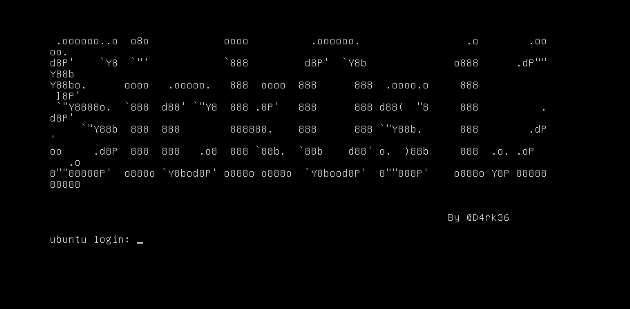

SICKOS: 1.2 Walkthrough ü§í
Table of Contents
Description :
This is second in following series from SickOs and is independent of the prior releases, scope of challenge is to gain highest privileges on the system.

Nmap Scan :
Output :
Use whatweb :
Open the IP in browser :
Use Dirb to look for hidden objects :
You will find /test. Use http-methods.nse :
Finds out what options are supported by an HTTP server by sending an OPTIONS request. Lists potentially risky methods.Copy php-reverse-shell so that we can use it :
Upload that php-reverse-shell using curl (change IP (your IP) and port (443)) :
You will see that our exploit is uploaded :
Set a netcat listener and open the exploit in the browser :
Set a nc listener in new tab :
Make an exploit :
Give it executable permissions :
You will get be root in the new shell :
Thanks for reading this post, if you like my work you can support by buying me a pizza. üçï
Read other posts